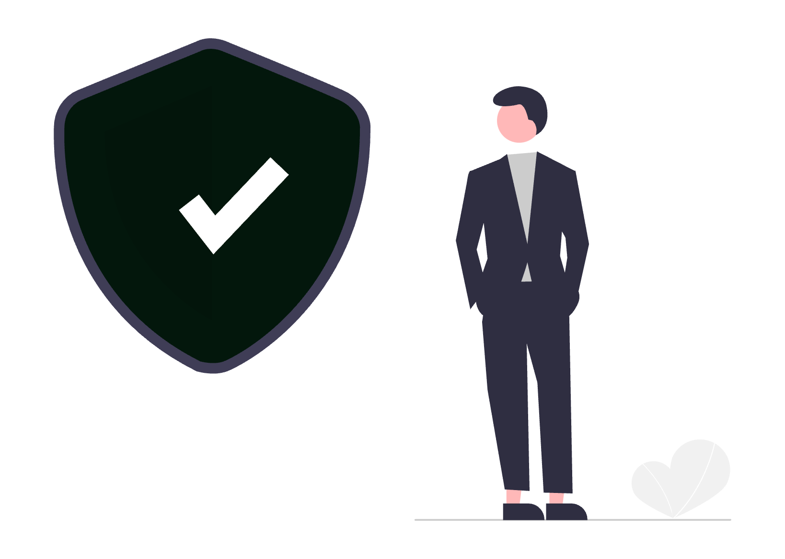

Pe 15 octombrie 2026, Microsoft a anunțat Copilot for legal: peste 20 de abilități juridice, ca pluginuri pentru Copilot în Word pe desktop și în Cowork. Pentru un cabinet mic, contează ce poți face concret, ce licență îți trebuie și ce verifici înainte să pui un dosar în chat.

1. Ce s-a anunțat pe 15 octombrie 2026
Anunțul din Microsoft Tech Community prezintă peste 20 de abilități juridice, plus pluginuri de parteneri. Microsoft spune că abilitățile merg dincolo de simple prompturi. La o modificare de clauză, Word aplică editarea ca modificare urmărită și păstrează formatarea.
Este evoluția Legal Agent, arătat în aprilie 2026. Law.com o descrie la fel. Mesajul MC1509799 (arhivă neoficială) adaugă că Legal Agent se retrage, iar utilizatorii existenți pierd accesul la acel produs. Dacă l-ai testat în primăvară, verifică în tenant ce a rămas.
Copilot, Microsoft 365, Word și Cowork sunt mărci ale Microsoft. Claude este marcă a Anthropic. Gemini este marcă a Google. ChatGPT și Astra sunt mărci ale OpenAI. Textul nu recomandă un produs.
2. Ce se mută în cabinet și ce rămâne pe semnătura ta
Microsoft pune abilitățile în Word, unde deja redactezi. Prima variantă de sumar, de ciornă sau de modificare urmărită se apropie de fișier. Judecata pe care o semnezi rămâne a ta.
Sursele de aici nu dau o cifră de timp economisit pentru un cabinet din România. Nu o pune într-un buget și nu o promite unui client.
Strategia, negocierea și textul final nu se deleagă unui plugin.
3. Unde stă pluginul: Word pe desktop și Cowork
Pagina de suport Microsoft limitează pluginurile juridice la Copilot în Word pe desktop și la Cowork. Law.com numește Cowork oferta agentică a Microsoft: lucru pe mai mulți pași și pe mai multe fișiere. Nu amesteca numele cu alte produse care folosesc un cuvânt apropiat.
În Word lucrezi pe documentul deschis. În Cowork, anunțul descrie compararea termenilor între contracte, extragerea angajamentelor și a termenelor, cronologii de speță. Redactarea poate porni din precedente aprobate în SharePoint, cu controale de conținut din Word pentru câmpuri editabile.
Navigarea între termeni definiți și definițiile lor intră în preview mai târziu în octombrie 2026. Nu este încă disponibilitate generală.
4. Peste 20 de abilități, legate de document
MC1509799 le rezumă așa: sumar, redactare, revizuire și redline; revizuire de contracte pe un playbook; ciornă din șabloane și precedente; comparare cu precedente, șabloane și politici; explicarea modificărilor urmărite. La sumar, suportul Microsoft spune că răspunsul vine cu citări numerotate. Le deschizi, iar locul folosit din document se evidențiază.
Microsoft anunță și pluginuri de parteneri, pentru cercetare, dosare și documente, semnătură electronică și e-discovery. Apar treptat în registrul de pluginuri. Lista este a Microsoft, nu o recomandare.
Promptul vag dă un răspuns vag. Exemplul din suport: în loc de „care sunt riscurile?”, întrebi care sunt riscurile vânzătorului legate de livrarea serviciului. La modificări, una câte una: actualizezi clauza de limitare a răspunderii ca să excludă daunele indirecte pentru cumpărător, nu „toate riscurile”. Pentru formulare, vezi prompt engineering juridic pentru avocați.
5. Sumar, citări și modificări urmărite în Word
Pe un document deschis în Word pe desktop, fluxul din suport este scurt. Deschizi Copilot. Dacă pluginul juridic este pornit, poate detecta singur că fișierul cere abilități juridice. Scrii promptul și trimiți. La sumar verifici citările, nu doar paragraful. La editare, redline-urile vin ca modificări urmărite. Le inserezi cu Accept, sau cu Accept All dacă îți asumi pachetul întreg.
Prin butonul + adaugi alte fișiere: Upload images and files de pe calculator sau Add content din Microsoft 365. Răspunsul ține cont de documentul deschis și de ce ai atașat.
Aceeași pagină spune că Copilot nu oferă consultanță juridică, că textul poate fi inexact și că tu verifici înainte să te bazezi pe el. Actul semnat rămâne al tău.
6. Revizuirea de contracte pornește din playbook
Microsoft scrie că, deocamdată, revizuirea de contract se face doar din playbook-uri. Copilot nu revizuiește încă pornind de la șabloane sau de la alte documente.
Playbook-ul este un .docx, de pe calculator sau din cloud. Copilot îl desface în teme, cu reguli și clauze-exemplu. Citești regulile, le corectezi, apoi pornești Run Review. Analiza vine temă cu temă. Unde textul nu stă în regulă, primești o modificare urmărită, pe care o accepți sau o respingi. Fără un playbook al cabinetului, abilitatea nu are pe ce să se sprijine. Pentru metoda de audit, vezi auditul de contracte și due diligence cu AI.
7. Ciorna pornește dintr-un precedent sau dintr-un șablon
Redactarea unui contract nou este alt flux. Aici Microsoft permite un precedent sau un șablon. În chat scrii @Draft-new-contract, cu documentul atașat. Copilot face din sursă un șablon cu substituenți. Deschizi documentul și ceri lista de câmpuri.
Contextul îl dai în chat sau într-un fișier. O valoare repetată se actualizează peste tot dintr-un singur loc. Finish Draft închide varianta de distribuit. Înainte, citești câmpurile completate automat: un nume greșit se repetă în tot actul. Pentru șabloanele cabinetului, separat de acest plugin, vezi generarea automată a contractelor pentru avocați.

8. Cine îl pornește și cine îl poate opri
În Word pe desktop, pluginul juridic este pornit implicit. După ce l-a folosit, Copilot tinde să rămână pe abilitățile juridice în acea conversație.
Oprire locală: Copilot, meniul cu trei puncte, Manage plugins & skills, comutatorul Legal pe off.
În Cowork îl adaugi tu. Calea din suport: Customize, cauți Legal sau mergi la Roles & Industry, alegi Legal for Cowork, apeși Add. Îl chemi cu / și numele abilității, sau din meniul +. Poate porni și din intenția frazei.
Administratorul îl poate închide pentru organizație. MC1509799 indică două comutatoare: Legal Skills pentru Copilot în Word, din Microsoft 365 Apps admin center, și pluginul Cowork for Legal, din Microsoft 365 admin center. Lansarea nu cere o configurare prealabilă. Cere o decizie dacă pluginul rămâne disponibil.
Word pe desktop
└── plugin Legal, pornit implicit
├── sumar, cu citări numerotate
├── modificări urmărite (Accept / Accept All)
├── revizuire doar din playbook .docx
└── ciornă din precedent sau șablon
Cowork
└── plugin Legal, îl adaugi din Customize
└── lucru pe mai mulți pași, pe fișiere
9. Licența comercială și calendarul real de lansare
Condiția de acces, în suport și în MC1509799, este o licență Microsoft 365 Copilot comercială activă. Sursele citate aici nu publică un preț. Nu completa suma din memorie.
Tech Community spune că noile capabilități sunt disponibile general pentru clienții Microsoft Copilot. MC1509799 dă ritmul: previzualizarea publică a început la sfârșitul lui aprilie 2026 și era estimată până la mijlocul lui decembrie 2026; lansarea generală începe la mijlocul lui octombrie 2026 și este estimată să se încheie la mijlocul lui decembrie 2026.
Data anunțului nu înseamnă că vezi pluginul a doua zi. Dacă lipsește, poate fi încă în fereastra de lansare, licența nu este pe cont, sau administratorul l-a oprit.
10. Claude, Gemini și Astra, citite fără hartă de România
În 2026 au mai fost anunțate trei oferte pentru lucrul juridic. Tabelul ține doar ce spun sursele. Nu rezultă din ele că un cabinet din România le poate activa, și nici cum lucrează în română sau pe dreptul român.
| Ofertă | Anunț | Ce spun sursele despre acces |
|---|---|---|
| Copilot for legal (Microsoft) | 15 octombrie 2026 | Pluginuri în Word pe desktop și în Cowork. Licență Microsoft 365 Copilot comercială. Lansare generală estimată până la mijlocul lui decembrie 2026. |
| Claude for Legal (Anthropic) | 12 mai 2026 | 12 pluginuri pe arii de practică și 20 de conectori, după ABA Journal. TechCrunch redă afirmația că ajung la clienții Claude cu abonament plătit. Sursele nu descriu dreptul român. |
| Gemini Enterprise for Legal | 25 august 2026, preview | Preview, prin Google Cloud și parteneri, cu firme mari ca clienți de lansare. Blogul Google Cloud nu arată o activare pentru un cabinet din România. |
| Astra for Law (OpenAI) | 17 septembrie 2026 | Pagina de produs: firme selectate, prin Trusted Access, în ChatGPT și Codex. Centrul de ajutor limitează oferta inițială la Statele Unite și descrie un index de drept american. |
11. Analiza din industrie rămâne analiză
Law.com, pe 15 octombrie 2026, citește lansarea ca o continuare a intrării marilor companii de tehnologie în zona juridică și ca o mutare către software cu abilități pregătite. Este lectura unei publicații, nu un fapt despre onorariul tău și nu un motiv să schimbi unealta luna aceasta.
Comentariul de piață vorbește uneori despre presiunea asupra furnizorilor de legaltech și despre ideea că distribuția stă la Microsoft. Trateaz-o ca ipoteză, nu ca fapt. În textul Law.com verificat aici, propoziția care stă este cea despre verticala juridică și despre abilitățile pregătite.
12. Checklist înainte să încarci un dosar
Secretul profesional, în Legea nr. 51/1995 și în Statutul profesiei de avocat, nu se suspendă pentru că unealta stă în Word. Nu încarci date de client până nu știi unde sunt procesate și cine are acces. Anonimizezi unde poți.
La GDPR îți trebuie un temei, contractul de prelucrare cu furnizorul, locația datelor, retenția și informarea clienților, acolo unde situația o cere. În anunțul din 15 octombrie, Microsoft scrie că prompturile și răspunsurile stau în limita serviciului Microsoft 365, cu protecție de date enterprise, că Copilot lucrează doar cu conținutul la care ai deja acces, că respectă etichetele de sensibilitate și că nu folosește prompturile, răspunsurile sau documentele ca să antreneze modelele de bază. Este descrierea Microsoft, nu o dezlegare de la barou. O citești lângă contract și lângă setările tenantului. Limita serviciului Microsoft 365 nu înseamnă, singură, că datele rămân în Uniunea Europeană: locația o verifici în documentația Microsoft despre EU Data Boundary, cu excepțiile ei, și în acordul de prelucrare a datelor. Descrierea privește Copilot în Microsoft 365. Pluginurile de parteneri și sursele juridice terțe au propriii furnizori și propriile condiții: înainte să le folosești pe un dosar, verifici separat cine primește datele și ce contract ai cu acel furnizor.
Poți greși tu, poate greși și modelul. Răspunzi pentru actul semnat. Pentru încadrare, pleacă de la EU AI Act explicat pentru cabinete de avocați. Dacă datele nu au voie să iasă din cabinet, compară un asistent AI local și privat. Corespondența rămâne un flux separat de acest plugin. Pentru ea există ghidul Cum să folosești Outlook ca avocat.
Înainte de primul dosar real, bifează:
- Lucrezi din contul de serviciu al cabinetului, nu dintr-un cont personal de Copilot.
- Licența Microsoft 365 Copilot comercială este pe contul care deschide Word.
- Pluginul juridic se vede în Word pe desktop. În Cowork l-ai adăugat explicit, dacă acolo vrei să lucrezi.
- Știi dacă administratorul l-a lăsat pornit.
- Pentru revizuire ai un playbook
.docxpe care l-ai citit, nu un fișier gol. - Ai scos din document datele care nu trebuie să iasă, acolo unde anonimizarea este posibilă.
- Ai contractul de prelucrare și știi pe cine întrebi despre locație și retenție.
- Pluginurile de parteneri sunt oprite pentru dosarele cu date de client sau le-ai verificat separat, cu contractul fiecărui furnizor.
- Ai timp să citești citările și fiecare modificare urmărită înainte de Accept.
- Nu ai promis clientului un termen mai scurt pe baza acestui anunț.
Întrebări frecvente
Ce este Microsoft Copilot for legal?
Este setul de peste 20 de abilități juridice anunțat de Microsoft pe 15 octombrie 2026, livrat ca pluginuri pentru Copilot în Word pe desktop și în Cowork. Continuă Legal Agent din aprilie 2026. În centrul de mesaje, Microsoft arată că Legal Agent se retrage.
Unde găsesc pluginul juridic?
Sursele Microsoft pentru această lansare descriu pluginul în Word pe desktop și în Cowork. În Word este pornit implicit. În Cowork îl adaugi din Customize. Administratorul îl poate opri pentru organizație.
Ce licență îmi trebuie și există un preț public?
Îți trebuie o licență Microsoft 365 Copilot comercială activă. Sursele folosite aici nu publică un preț. Lansarea generală începe la mijlocul lui octombrie 2026 și este estimată până la mijlocul lui decembrie 2026, deci pluginul poate lipsi încă din tenantul tău.
Pot revizui un contract fără playbook?
Nu în forma descrisă acum de Microsoft. Revizuirea pornește dintr-un playbook .docx. Microsoft scrie că, deocamdată, Copilot nu revizuiește contracte pornind de la șabloane sau de la alte documente.
Pot încărca un dosar cu date de client?
Nu înainte să știi unde sunt procesate datele, cine are acces și ce prevede contractul de prelucrare. Anonimizezi unde poți. Microsoft descrie o limită de serviciu Microsoft 365 și spune că prompturile și documentele nu antrenează modelele de bază; asta nu îți spune, singur, în ce țară sunt procesate datele. Tu răspunzi pentru actul pe care îl semnezi.
Acoperă dreptul român sau răspunde bine în română?
Sursele citate aici nu descriu acoperirea dreptului român și nu descriu calitatea textului în limba română. Nu trata rezultatul ca pe o verificare a legislației din România. Verifici fiecare afirmație, fiecare citare și fiecare modificare urmărită.
Concluzie
Copilot for legal îți aduce, în Word pe desktop și în Cowork, peste 20 de abilități juridice: sumar cu citări, ciornă din precedent, modificări urmărite și o revizuire care, acum, pornește doar din playbook. Îți trebuie licență Microsoft 365 Copilot comercială, iar lansarea generală este estimată să se întindă până la mijlocul lui decembrie 2026.
Sursele nu publică un preț, nu descriu dreptul român și nu îți dau o durată pe care să o treci la client.
Limita practică este simplă. Pluginul poate pregăti o primă trecere. Tu citești, corectezi și semnezi. Fără playbook, fără licență pe cont și fără o decizie despre datele de client, anunțul rămâne o știre, nu un flux de cabinet.
Dacă dorești să implementezi un flux de lucru cu instrumente de inteligență artificială pentru cabinetul tău, adaptat specificului practicii și echipei tale, echipa SOLON oferă consultanță de digitalizare și dezvoltare dedicată profesioniștilor din domeniul juridic.
Prezentul articol are un caracter pur informativ și educațional și nu constituie consultanță juridică în sensul Legii nr. 51/1995. Pentru o situație concretă, consultă un avocat.
Articol redactat cu asistență AI, verificat și asumat editorial de echipa SOLON.